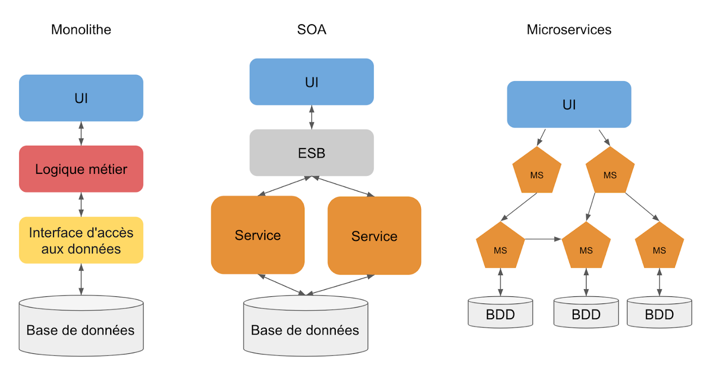
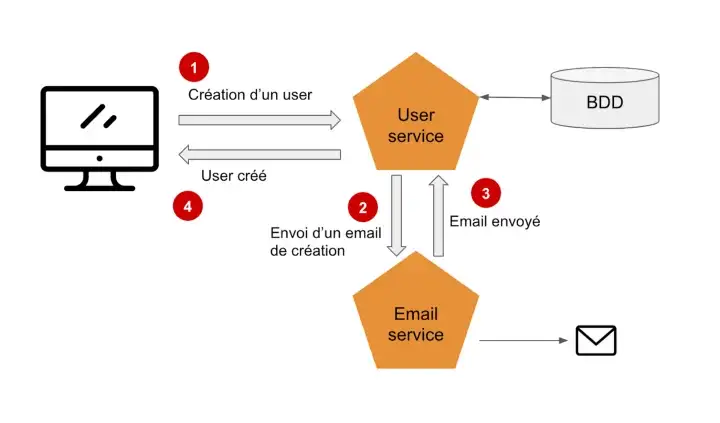
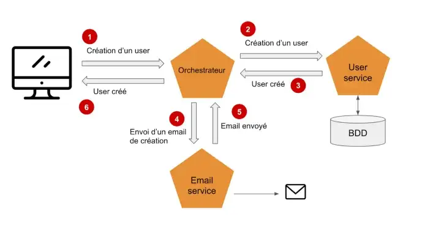
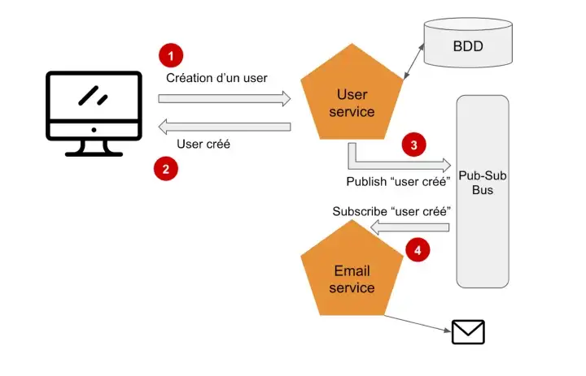
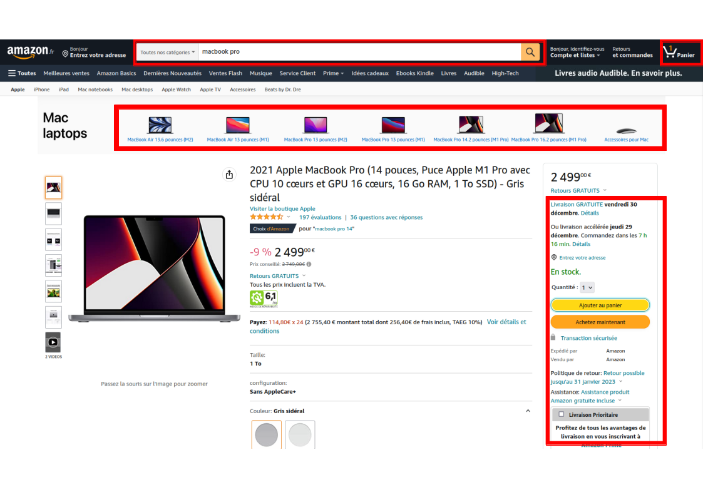
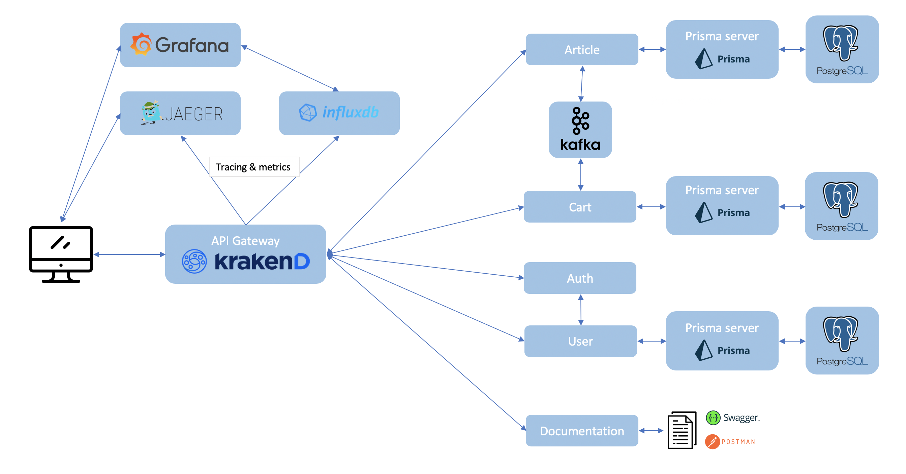

Les architectures microservices
- MON
- 2022-2023
- temps 2
- Nicolas BERT
Introduction au concept de microservices en informatique
Dans ce MON, nous allons discuter du principe de microservices et plus particulièrement de son utilisation en informatique.
Prérequis :
- Connaître le contexte de développement full-stack (frontend, backend, API ...)
- Niveau intermédiaire
Introduction
Quand on pense aux microservices, on pense premièrement à plein de petites structures bien organisées qui sont chacune responsable d'une fonctionnalité et destinée à fonctionner ensemble.
Cette organisation de "délégation" et de "répartition" du travail n'est clairement pas anodine. On retrouve cette méthode de découpage à de nombreux niveaux. Par exemple, le gouvernement français est découpé en ministère et chaque ministère va s'occuper d'un domaine particulier (santé, justice, éducation, travail, intérieur ...) tout en fonctionnant les uns avec les autres. De même, lorsque l'on travail en équipe projet à Centrale chacun se répartit le travail et s'occupe d'une partie du projet tout en restant avertit du travail des autres. L'idée de cette répartition des tâches est de gagner en efficacité, clarté, organisation et performance. Ce concept se démocratise beaucoup et est devenu très populaire dans les projets IT.
Qu'est-ce qu'une architecture microservices ?
Le terme microservices est apparu en 2011 au cours d'ateliers d'architecture, bien qu'il réutilise un grand nombre de principes largement employés par les systèmes d'information des grandes entreprises, notamment les concepts de l'architecture orientée service (SOA). Le sujet est réellement évoqué à partir de 2014 selon Google Trends. Parmi les pionniers, on compte Netflix qui a oeuvré pour populariser ces architectures.
La philosophie de l'architecture en microservices s'inspire en grande partie de la philosophie UNIX qui prône "ne faire qu'une seule chose, et la faire bien". Il s'agit d'une méthode de développement logiciel qui a pour but de décomposer une application en fonctionnalités clés, chacune de ces fonctions est appelée "service". Chaque service est créé pour répondre à un besoin métier unique et précis. On peut citer par exemple : la gestion des utilisateurs, interface de paiement, envois de mails, sécurité, recherche, envois de notifications ... Par ailleurs, chaque service est indépendant et modulable, chacun peut fonctionner (ou dysfonctionner) sans affecter les autres. Les microservices indépendants communiquent les uns avec les autres en utilisant des API (REST la plupart du temps) indépendantes du langages de programmation. Cette catégorie d'architecture s'oppose aux architectures monolithiques qui sont construites comment une seule entité qui s'occupe de tout.
L'architecture en microservices permet aussi de restructurer les équipes de développement et la communication entre les services pour mieux se préparer aux inévitables pannes, mais aussi aux évolutions futures et à l'intégration de nouvelles fonctions.
Cette définition et ce découpage en service peut nous rappeler un type d'architecture assez similaire, l'architecture orientée services (SOA) qui est déjà bien établie.
Quelle est la différence entre une architecture SOA et une architecture microservices ?
Premièrement, les précurseurs des microservices identifient l'architecture en microservices comme une extension du concept de SOA, la plupart des principes de conception des microservices étaient déjà disponibles dans le monde de la SOA. Certains disent que "l'architecture microservices est une SOA bien conçue". Cependant, il y a tout de même des différences entre ces deux types d'architectures :
- La taille : En microservices, comme le nom le laisse penser, la taille des services est beaucoup plus faible que celle des services en SOA. Chaque service a une seule responsabilité, alors qu'avec la SOA, les services peuvent englober plusieurs fonctions métiers.
- La réutilisation : La SOA prône la réutilisation des composants sans se soucier du couplage et des interactions. En revanche en microservices, on essaie de minimiser la réutilisation du code puisque cela crée des dépendances. On privilégie donc un couplage faible quitte à dupliquer son code.
- La communication : En SOA, la communication se fait à travers un "entreprise service bus" (ESB) de manière synchrone et cela introduit un point de défaillance critique qui est aussi une source de latence. En comparaison, dans une architecture microservices, chaque service est indépendant et par conséquent plus tolérant aux pannes. Cela peut être mis en place par exemple en faisant en sorte que chaque service soit à l'écoute des modifications des autres services.
- La duplication des données : Un des objectifs de la SOA est de permettre à l'application d'avoir accès à toutes les données de manière synchrone et direct. En microservices, dans l'idéal, chaque service a accès seulement à toutes les données dont il a besoin même si cela implique de dupliquer les données et donc rajoute de la complexité.
On peut schématiser les différentes architectures de la manière suivante :
Quels sont les avantages et inconvénients d'une architecture en microservices ?
- ✅ Développement indépendant : Le découpage en service permet à chaque équipe d'utiliser les technologies qu'ils préfèrent et qui conviennent à la fonctionnalité gérée par le service et ne sont donc pas limités aux technologies imposés en début de projet.
- ✅ Déploiement indépendant : Chaque microservice est déployé de manière indépendante. Un service peut-être mis-à-jour sans a voir à redéployer l'application dans son entièreté, ce qui facilite donc la gestion des bugs et l'implémentation de nouvelles fonctionnalités. En opposition, dans une architecture monolithique, un bug peut mettre en péril l'application entière.
- ✅ Scaling indépendant : Chaque service étant indépendant, il peut grandir et évoluer de manière indépendante pour s'adapter aux besoin sans dépendre des autres. On optimise alors les coûts et le temps puisqu'il n'est pas nécessaire de faire évoluer l'application entière comme ce serait le cas avec une application monolithique.
- ✅ Équipes ciblées : Cette organisation permet de répartir les équipes par service et facilite donc beaucoup de choses. L'arrivée de nouveaux membres est facilitée et la phase de compréhension du projet est plus courte puisqu'il n'ya que le service à comprendre.
- ✅ Moins de code : Une application monolithique partage beaucoup de dépendances et l'ajout de fonctionnalités n'est pas aisé. En revanche, une architecture en microservices va séparer le code et minimiser les dépendances et ainsi faciliter le scaling.
- ✅ Isolation des données : Dans une architecture microservices, chaque service a accès de manière privée uniquement aux données dont il a besoin. Il est alors possible de mettre à jour le schéma de base de données sans impacter toutes l'application.
- ✅ Résilience : Avec une architecture microservices, on diminue grandement le nombre de défaillances critiques possibles. Lorsqu'un service tombe en panne, l'application entière ne cesse pas de fonctionner comme c'est le cas avec le modèle monolithique, le risque est donc diminué et c'est également vrai lors de l'ajout de nouvelles fonctionnalités. Les erreurs sont isolées et par conséquent plus simple a corriger.
- ✅ Avancées technologiques : Le découpage en service permet à chaque service de suivre indépendamment des autres les avancées technologiques et de les appliquer sans affecter l'application dans son entièreté. Les architectures Cloud et la conteneurisation avec Docker notamment rendent la mise en place d'une architecture microservices beaucoup plus simple.
- ❌ Complexité : Même si chaque service en lui-même est assez simple, l'ensemble constitue un système distribué complexe.
- ❌ Tests : L'existence de nombreux services peut rendre plus difficile l'écriture de tests s'il y a des dépendances entre les services.
- ❌ Intégrité des données : Les microservices utilisent une architecture de base de données qui est distribuée (cloud) et l'intégrité des données n'est pas forcément assurée. Certaines fonctionnalités vont par exemple avoir besoin de mettre à jour plusieurs bases de données de plusieurs services, le tout doit être cohérent et fonctionnel.
- ❌ Latence du réseau : Le fait d'avoir de nombreux services va se traduire par une importante communication entre les services. Une latence du réseau va ralentir les communications et ce phénomène est accentué par les possibles chaînes de dépendances entre les services.
L'orchestration et la chorégraphie
Dans une architecture microservices, de nombreux services peuvent être présents et certains ont besoin de communiquer entre eux pour s'échanger des informations. Cette communication doit être encadrée et elle peut se faire de deux façons : l'orchestration et la chorégraphie.
L'orchestration 🎼
La première idée qui nous vient pour faire communiquer des services entre eux est d'utiliser des API REST.
Cette façon de faire est assez simple à mettre en place mais le système devient rapidement complexe et fastidieux et maintenir puisque l'on crée des dépendances entre les services. Pour éviter cela, une meilleure façon est d'introduire une couche supplémentaire avec un nouveau service que l'on appelle l'orchestrateur :
L'orchestrateur est le seul service qui a connaissance de tous les autres. Ainsi si un service est mis à jour, la seul dépendance à mettre à jour également est l'orchestrateur, on réduit grandement le niveau de dépendances. Cependant, en introduisant un orchestrateur, on va indirectement introduire de la latence et une mauvaise tolérance aux pannes.
La chorégraphie 🕺🏻
La chorégraphie est une approche différente qui permet de pallier certains inconvénients de l'orchestration : la dépendance et la latence. Cette approche consiste à utiliser des événements avec un modèle publish-subscribe :
Ici, lorsqu'une action est effectuée, le service en question va publier un événement indiquant qu'il a effectué cette action. Les autres services quant à eux peuvent souscrire à cet événement de manière asynchrone pour effectuer les modifications nécessaires de l'événement. Les services n'ont pas connaissances des autres, le système est donc performant reste simple à maintenir à plus grande échelle. Si un service tombe en panne, le système continue de fonctionner mais l'on peut cependant perdre la cohérence des données.
Conseils et bonnes pratiques
- Langage des microservices : on a vu que chaque microservices peut être développé avec le langage souhaité. Dans la réalité il est recommandé de minimiser ce nombre de langages afin de faciliter le changement d'équipes des développeurs et de pouvoir travailler sur n'importe quel service et ainsi gagner en productivité.
- Définition des API : Il est important d'avoir une cohérence globale dans la définition des API. Pour cela un projet à part est créé afin d'expliciter ces définitions/spécifications.
- Base de données : chaque service dispose de sa propre base de données qui ne doit être accessible que par lui. Si ce n'est pas le cas, les mises à jour de base de données sont complexes et risquées. Si un service souhaite modifier la base de données d'un autre service il doit passer par une API ou un événement.
- Déploiement continu : Le déploiement continu est inévitable en microservices, en effet, déployer chaque service à la main un par un serait très fastidieux.
- Maintenance des dépendances : Les dépendances de chaque service doivent être mises à jour régulièrement, et cela peut être fait de manière périodique tout en ayant une série de tests afin de s'assurer que le service et le système continue de fonctionner après la mise à jour.
Exemple de microservices
Il existe de nombreuses façons de découper un projet en microservices. Pour l'exemple uniquement, voici comment Amazon pourrait organiser une partie de son application en microservice. (Amazon fonctionne très probablement en microservices, mais le découpage que je propose est purement fictif)
Ici j'ai pris l'exemple de la recherche d'un article et de son achat sur Amazon. Chaque fonctionnalité représenté par un rectangle rouge pourrait être organisé comme un microservice.
- La barre de recherche
- Les suggestions d'articles (à l'aide d'algorithme se basant par exemple sur les précédentes visites de l'utilisateur, la période actuelle, sa localisation ....)
- La partie concernant la livraison (estimation des délais de livraison, retour de produits, gestion des stocks...)
- Le panier
- ...
Toutes ces fonctionnalités, qui sont externes au site (dans le sens où elles vont faire appel à des algorithmes externes et afficher seulement le résultat sur le site), peuvent être découpées et séparées en microservices. On peut évidemment pensez à d'autre fonctionnalités : paiement, évaluations des produits ...
Preuve de concept
L'auteur de l'article Sébastien Bouttier, nous mets à disposition une preuve de concept avec l'architecture suivante sous Docker :
What you can do:
- Create/update/get articles
- Add articles in the cart, update/get cart items
- Delete an article that is in the cart: will delete the article from the cart thanks to a kafka event
- Checkout the cart: will edit the stock of articles with a kafka event
- If you don't have an auth token you can do nothing on user service
- Signup and login (auth service) to get a token
- You can now access the user service except deleting a user: requires a special role in the token
Sources
(consultées le 31/12/2022)